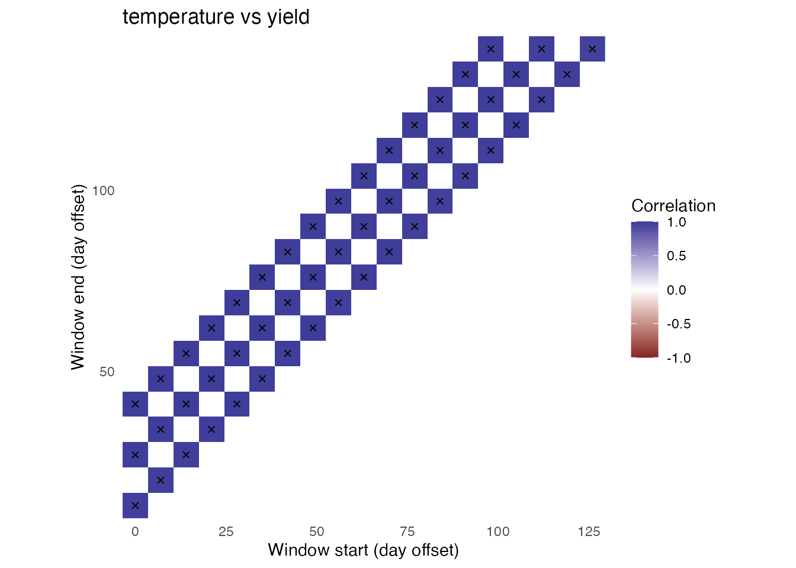

This short example uses simulated data. For CSV input, weather
queries, and a complete real-data workflow, see
vignette("real-data-workflow").
dat <- simulate_env_window_data(
n_environments = 24,
n_days = 140,
n_genotypes = 8,
signal_start = 45,
signal_end = 75
)
head(dat$phenotypes)## # A tibble: 6 × 4
## environment_id genotype_id yield quality
## <chr> <chr> <dbl> <dbl>
## 1 E01 G001 5.75 5.84
## 2 E01 G002 6.17 6.57
## 3 E01 G003 6.41 8.35
## 4 E01 G004 3.92 7.53
## 5 E01 G005 5.17 5.38
## 6 E01 G006 5.47 7.44
head(dat$environments)## # A tibble: 6 × 8
## environment_id latitude longitude season_start season_end altitude_m
## <chr> <dbl> <dbl> <date> <date> <dbl>
## 1 E01 29.2 -80.7 2022-10-13 2023-03-01 9.4
## 2 E02 29.1 -82.7 2021-11-09 2022-03-28 53.2
## 3 E03 30.2 -80.4 2020-05-08 2020-09-24 70.7
## 4 E04 27.1 -82.0 2022-07-18 2022-12-04 63.4
## 5 E05 28.9 -80.5 2021-04-15 2021-09-01 64.8
## 6 E06 29.9 -82.0 2020-10-25 2021-03-13 39.1
## # ℹ 2 more variables: start_date <date>, end_date <date>A window size is the number of consecutive weather days summarized. A step size is how many days the window moves between tests. Thus, a 28-day window with a 7-day step tests days 0-27, 7-34, 14-41, and so forth.
fit <- scan_env_windows(
weather = dat$weather,
traits = dat$phenotypes,
periods = dat$environments,
weather_vars = c("temperature", "rainfall"),
trait_vars = c("yield", "quality"),
window_sizes = c(14, 28, 42),
step = 7,
summaries = c(temperature = "mean", rainfall = "sum"),
min_pairs = 10,
quiet = TRUE
)
fit## Environmental-window scan
## Windows: 51
## Environments: 24
## Weather variables: temperature, rainfall
## Traits: yield, quality
## Window size(s): 14, 28, 42 days
## Step: 7 days
## Successful tests: 204 of 204
rank_env_windows(fit, n = 3)## # A tibble: 12 × 17
## rank window_id start_offset end_offset window_days environmental_variable
## <int> <int> <int> <int> <int> <chr>
## 1 1 36 112 139 28 rainfall
## 2 2 19 126 139 14 rainfall
## 3 3 51 98 139 42 rainfall
## 4 1 36 112 139 28 rainfall
## 5 2 19 126 139 14 rainfall
## 6 3 51 98 139 42 rainfall
## 7 1 4 21 34 14 temperature
## 8 2 26 42 69 28 temperature
## 9 3 41 28 69 42 temperature
## 10 1 42 35 76 42 temperature
## 11 2 25 35 62 28 temperature
## 12 3 24 28 55 28 temperature
## # ℹ 11 more variables: trait <chr>, mean_coverage <dbl>,
## # min_coverage_observed <dbl>, correlation <dbl>, p_value <dbl>,
## # n_pairs <int>, environmental_sd <dbl>, trait_sd <dbl>, status <chr>,
## # p_adjusted <dbl>, absolute_correlation <dbl>
diagnose_env_scan(fit)## $n_environments
## [1] 24
##
## $n_windows
## [1] 51
##
## $status_counts
## # A tibble: 1 × 2
## status n
## <chr> <int>
## 1 ok 204
##
## $warnings
## [1] "No structural problems detected by the built-in checks."
plot_window_heatmap(fit, "temperature", "yield")